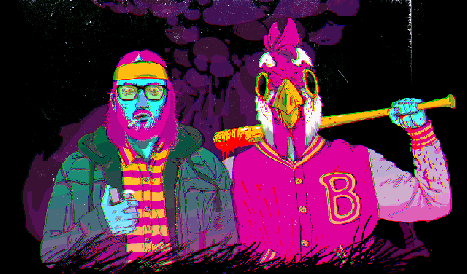
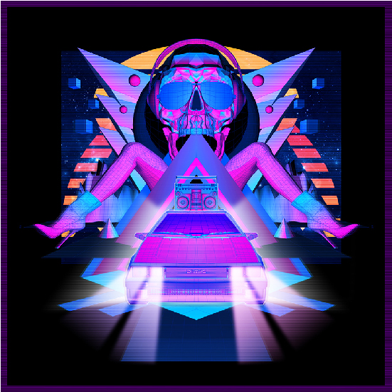

via Solenn Le Bihan
O Synthwave nos traz essa sensação de nostalgia transportando os ouvintes para um passado que nunca viveram e um futuro que nunca saberão como é, sendo alimentado por um presente que parece muito conectado as distopias de uma época pelas quais seus criadores foram e são tão influenciados.
Hotline Miami
Toda a temática do Synthwave é voltada para a visão de característica dos anos 80 sem ser os anos 80. Essa visão dos anos 80 é simples, romantizada, com um sentimento de bondade e melancolia, trazendo um choque de otimismo e pessimismo ao mesmo tempo, onde imaginávamos um futuro incrível, mas com uma apreensão sombria sobre o que estava por vir. Foram os últimos anos antes da tecnologia nos arrebatar de vez em seu domínio, agora que isso aconteceu e sabemos que não tem retorno, é onde buscamos conforto, onde as coisas pareciam mais simples, gerando a ideia de que as ruas cobertas por “neon tremeluzentes, perseguições de carros em alta velocidade, cortes de cabelo pós-futuristicos e a tecnologia era uma fera controlável e robôs eram apenas uma previsão selvagem parecia algo mais palpável, onde o gênero musical transmitia a sensação de deveríamos aproveitar ao máximo o tempo que tínhamos.
Clique na iamgem para ver seu trailer


Via Giphy
A iconografia retrô , que pode ser assimilada a palavras como, old school ou vintage , significa um estilo visual ou musical com uma tendência passada dos anos 80 (ou antes) ou uma corrente cultural passada. Este termo pode ser encontrado em publicidade, mídia, cinema, arte ou especialmente no mundo da música Synthwave
via Jacey
O design tem, em geral, muitos estilos diferentes de acordo com todos os tempos e idades, mas é especialmente dos 80 que estamos interessados em nosso site. Estando diretamente ligados ao universo musical Synthwave , muitos designers repetem as idéias de pôsteres de fillmes antigos , capas de álbuns de música, decorações relacionadas ao campo de computador ou videogame , fillmes de terror ou séries de TV ensolarada ou com INTERFERENCIA. Drew Struzan , pintor que começou nos anos 70 até hoje, autor de muitos pôsteres de Guerra nas Estrelas, mas também ET, The Thing, Blade Runner, Regresso ao Futuro, Indiana Jones, os Goonies, Super 8 entre outros. Ele influenciou muitos artistas, incluindo o talentoso Paul Shipper , ilustrador de pôsteres oficiais da Marvel , Lucasfillm , Warner Bros , Disney e muito mais. Há também o excelente Andreas Bennwik, do estúdio Laser Unicorns , criador do sublime pôster de Kung Fury de David Sandberg. Eles têm algumas qualidades enormes que combinam todo o universo de Synthwave e são pesquisados por muitas comunidades de artistas de Retrowave porque seguem alguns padrões.
Via Giphy
Via Iron Skullet
Via Miami Sheriff
Via Giphy
A identidade no âmbito do Synthwave, gira em torno da estética dos anos, com um uma perspectiva de futuro da época, criando assim um retro futurismo. Visual pixelado, colorido e apelativo, junto com as influências da época são fundamentais para o gênero. O Synthwave gira em torno de construir uma imagem exagerada dos anos 80 misturando elementos com padronagem, coloração e geometria são fatores importantes dentro da estética do tema. O grid é outro elemento muito importante do Synthwave, pois com ele se traz a sensação de profundidade e espaço além de futuro alternativo e sensação de estar dentro do computador (como exemplo o fillme Tron (1984)).
A cor tem como objetivo provocar sensações e passar uma determinada informação. No Synthwave podemos dar o significado ao impacto visual com suas tonalidades. A intenção é a de transmitir energia e juventude. A cor é muito importante para o Synthwave, nela destaca-se principalmente o magenta e o ciano, fazendo um apelo visual as suas proporções e marcando essa estética da década de 80, célebre por suas cores fluorescentes, saturadas, pastel e gradiente. Percebe-se o destaque nas cores fortes, neon e preto pelo tema ser bem carregado. Cores que mais aparecem: Rosa neon, verde neon, ciano, azul turquesa, verde menta, branco, laranja, vermelho, vermelho neon, amarelo neon, preto, azul vivo, azul marinho, magenta, roxo, lilás, prata, cinza, borgonha e malva.
Via KIDMOGRAPH
Rede sociais do artista:
O ilustrador e o videoartista argentino Gustavo “KIDMOGRAPH” Torres, tem o seu trabalho descrito como o encontro da nova tecnologia digital e o old school, se especializando no futuro analógico 3D, animações e Cinema 4D. O artista denomina suas artes pelo tumbrl como Synthwave, retro futurista, e cyberpunk. Trabalhou para diversos clientes como: Jeremy Scott, Adidas, Vice, MTV, Kanye West, Will.I.am, Bruno Mars e The Strokes.
Via YOKO
Rede sociais do artista:
Ilustradora e designer gráfica japonesa possui um trabalho inconfundível, com explosões de cores, temas, paisagens com linhas retas e inspiradas em Miami Vice (1984).
Via KILIAN ENG
Rede sociais do artista:
Ilustrador sueco, também conhecido como “DW Design”, com seu estilo de um universo neon retrô, clichê. Fez capas para músicos e compositores de Synthwave como o canadense, Pilotpriest e o dinamarquês Code Elektro, para o álbum SUPERSTRINGS (2015), também para o grupo russo Tesla Boy, que misturam o Synthpop, New Wave e Electropop.